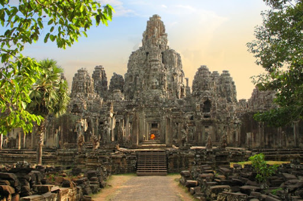

ប្រវត្តិសាស្រ្ត | ប្រាសាទ | កន្លែងស្នាក់ | រមណីយដ្ឋាន | ផែនទី

ពាក្យថាបាយ័ន អ្នកគ្រូ ពៅ សាវរស បានលើកយកគំនិតរបស់លោក
ប្វាស្សឺលីយ៉េរ៍ (Boisselier) ដែលបានកំណត់លើឫសនៃពាក្យនេះ ដោយបានលើកឡើងថា
បាយ័នជាស្នាដៃរបស់ ព្រះបាទជ័យវរ្ម័នទី៧ ដែលបានកសាងនៅក្នុងប្លង់ខុសគេ មានរាងមូល ដែលរំលឹកដល់យន្ត្រ។
គំនិតខាងលើនេះមិនអាចយកជាការបានទេ ហើយអ្នកគ្រូ ពៅ សាវរស បានបន្ថែមទៅគំនិតរបស់លោក សេដែស (Cœdès)
ដែលបានឲ្យយោបល់ប្រៀបធៀបនៃពាក្យបាយ័ន ជាមួយ វជយន្ត ដែលនិយាយនៅក្នុងសិលាចារឹក។ វជយន្ត គឺជាវាំងរបស់ព្រះឥន្ទ
បើតាមអត្ថបទ ល្បើកអង្គរវត្ត ដែលបានសរសេរឡើងនៅក្នុងសម័យកណ្តាល គឺព្រះឥន្ទបានឲ្យព្រះពិស្ណុការ (វិឝ្វកម៌ន៑) ចុះមកឋានកណ្តាល
ដើម្បីកសាងប្រាសាទឲ្យព្រះកេតុមាលា ដែលរំលឹកដល់វាំងរបស់ព្រះអង្គក្នុងគំនិតខ្មែរ គឺពេជយន្តរត្ន ឬ ទេវជយន្ត។ ឈ្មោះមកពីការធ្វើឡើងវិញជាច្រើន និងការបង្ហាញពីការធ្វើឲ្យដូចទៅនឹងស្នាដៃនៅលើផែនដីរបស់វិឝ្វកម៌ន៑។
ប្រាសាទបាយ័នមានទីតាំងស្ថិតនៅចំកណ្តាលនៃរាជធានីអង្គរធំ។
ប្រាសាទនេះកសាងនៅចុងសតវត្សរ៍ទី ១២ និងដើមសតវត្សរ៍ទី ១៣
ដោយព្រះបាទជ័យវរ្ម័នទី៧។ ប្រាសាទនេះមាន តួប៉មនីមួយៗ មានមុខបួន
ដែលមានកំពូល ៤៩ និងកំពូលក្លោងទ្វារចូល៥ ទៀត សរុបទាំងអស់ ៥៤ កំពូល
ដែលតំណាងឲ្យខេត្តក្រុងខ្មែរ ទាំង ៥៤ នៅសម័យកាលនោះ។ មានអ្នកប្រាជ្ញមួយចំនួនបានគិតថា
មុខទាំង ៤ នោះតំណាងឲ្យព្រះពោធិសត្វលោកេស្វរៈនៃព្រះពុទ្ធសាសនាមហាយាន អ្នកខ្លះទៀត គិតថា
ជារូបតំណាងព្រះបាទជ័យវរ្ម័នទី៧។ ប្រាសាទបាយ័នមានប្លង់បីជាន់។ ជាន់ទី១ និងទី ២ មានថែវដែលមានចម្លាក់ដ៏ល្វិចិត្រអ។
ប្រាង្គនៅកណ្តាល ១៦ និងស្ថិតនៅជាន់ទី ៣ មានរាងកាកបាទ។ សំណង់ប្រាសាទបាយ័នមានលក្ខណៈស្មុគស្មាញ ទាំងថែវ ផ្លូវដើរ
និងជណ្តើរ។ ក្រៅពីទឹកមុខញញឹមនៃរូបបាយ័ន ប្រាសាទនេះមានចម្លាក់ដ៏ល្អប្រណីត ដែលរៀបរាប់ពីរឿងទេវកថានៅថែវខាងក្នុង
និងខាងក្រៅ រៀបរាប់ពីជីវភាពរស់នៅរបស់ប្រជាជននៅសម័យអង្គរ មានទាំងផ្សារ ការនេសាទ ពិធីបុណ្យ ល្បែងប្រដាល់ ជល់មាន់ ។ល។
និងថែមទាំងមានការរៀបរាប់ពីព្រឹត្តិការណ៍ប្រវត្តិសាស្រ្តចម្បាំង និងព្យុហយាត្រាជាដើម។ ចម្លាក់នោះឆ្លាក់បានជ្រៅជាងនៅ ប្រាសាទអង្គរវត្ត តែមានលក្ខណៈសាមញ្ញ។
ទិដ្ឋភាពនៃចម្លាក់ បង្ហាញដោយផ្ទាំងតាមជួរ ពីរឬបីជួរ[១]។